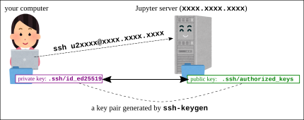

From the assignment list, find “Assignment 0:
Jupyter environment” and check its “Comments
from the instructor” (「教員からのコメント」). You do not need to
submit anything for this assignment.
Note: If you cannot find the assignment, register for the course
using the “Register a course” button in UTOL
(see:
UTOL
User Manual for Students p. 28).
Note: Registering for the course in UTOL does not mean you are
officially enrolled. If you decide to enroll, do so via
UTAS.
In the “Comments from the instructor”, find a message like:
“Visit https://xxxx.xxxx.xxxx:xxxx/ and sign in with your UTokyo
Account. Your username will be u2xxxx.” Then visit the URL and sign in
with your UTokyo Account.
After signing in, check the browser address bar and confirm that
you are on a URL like
https://xxxx.xxxx.xxxx:xxxx/user/u2xxxx/lab,
which matches your assigned username.
If you see the error 403: Forbidden: cannot
assign local user for xxxxxxxxxx@utac.u-tokyo.ac.jp, it means
your account is not ready yet. Make sure you have registered in UTOL
(see above), and let the instructor know you are waiting.
2 Working with Nbgrader
2.1 Fetching an Assignment
We use Nbgrader to distribute files for
assignments and exercises.
After signing in to Jupyter, open Nbgrader
-> Assignment List from the top menu to see
a page like this.
When an assignment is available, you will see its name along with a
Fetch button near the top of the page. Click
the button to retrieve it.
Click ▶ to display the fetched files. Then click a notebook (a file
ending with .ipynb) to open it.
Follow the instructions in the notebook.
2.2 Note: Do not
copy existing cells
Some cells are intended for entering your answers and are used for
grading.
If you duplicate (copy and paste) such a cell, the notebook may
break and cannot be graded.
If you need an extra cell that does not exist in the distributed
notebook, create a new one instead (a to create above,
b to create below, etc.), rather than copying an existing
cell.
2.3 Validate Notebook
Clicking the Validate button near the top
of a notebook or on the Assignment List page
checks whether:
the notebook is not broken (e.g., answer cells are not duplicated),
and
the cells have been modified at least slightly.
Before submitting a notebook, validate it to ensure that it is not
broken.
Note: The Validate function may not always
work reliably. Ask the instructor whether you should use it or ignore
it.
2.4 Submitting an Assignment
To submit your work from a Jupyter notebook, go to
Nbgrader -> Assignment
List in the menu, and click the Submit
button.
Some notebooks are for self-learning and are not graded. You do not
need to submit those notebooks.
Assignments that are graded will always be clearly announced in
UTOL Assignments. For such assignments, make
sure to:
submit your work via Jupyter, and
report your submission in the corresponding UTOL assignment (e.g.,
just state that you have submitted it on Jupyter).
The actual content of your work is submitted via
Jupyter.
3 (Optional) A Few Jupyter Notebook
Basics
In this course, you do not need to become a master of Jupyter
notebooks; you will mainly work with given notebooks by modifying and
executing existing cells.
However, knowing some basics will help you work more
comfortably.
Create a new notebook: open the “Launcher”
tab (+ in the tab bar) and click an
appropriate button.
3.1 Python Notebook
This is the most common type of notebook in the Jupyter
environment.
In the Launcher tab, click “Python 3
(ipykernel)” in the Notebook section.
In a notebook:
A new notebook initially contains a code cell.
Click inside a cell to edit it (edit
mode).
Press Esc (or click outside the cell) to exit editing
(command mode).
There are three types of cells: code,
markdown, and raw. In this course, we use only
code and markdown.
You can change the cell type using the toolbar at the top of the
tab.
In a code cell:
Write Python code. Press SHIFT + ENTER to execute it.
Cells beginning with %% behave
differently depending on the command; they may not contain Python
code.
In particular, cells beginning with
%%bash allow you to run shell
commands.
In a markdown cell:
Write text. Press SHIFT + ENTER to render it.
In command mode:
a : create a cell above
b : create a cell below
dd : delete a cell
You can learn other shortcuts from the main menu.
To rename a notebook, right-click the tab.
To delete a notebook, open the file browser in the left pane,
right-click the file, and choose “Delete”.
3.2 Bash Notebook
This is a notebook for executing shell commands.
Code cells should contain shell commands, not Python code.
Otherwise, it is very similar to a Python notebook.
A Python notebook can execute shell commands using
%%bash, but an important difference is that each
%%bash cell runs in a separate (fresh) shell. As a result,
shell state (such as the current working directory or environment
variables) does not persist across cells.
In contrast, a Bash notebook communicates with a single shell for
the entire session, so it behaves more like a traditional command-line
environment, while still providing the recording and documentation
features of Jupyter notebooks.
3.3 Terminal
This provides a terminal where you can execute shell commands.
In the Launcher tab, click “Terminal” in the Other section.
It is a standard command-line environment and does not create a
notebook.
4 If Jupyter goes wrong …
Things can sometimes go wrong in Jupyter. It is important to know
how to recover from such situations.
A “soft” reset:
From the top menu, select Kernel ->
Restart Kernel (or Restart
Kernel and Clear Output).
A “hard” reset (when nothing else works):
From the top menu, select File ->
Hub Control Panel. Then click
Stop My Server and restart it by clicking
Start My Server.
Also, make sure to press Ctrl-S frequently to save your
notebooks. Notebooks are saved automatically from time to time, but you
should not rely on
this.
5 I want to start over by
re-fetching the assignment …
If you accidentally break your notebook or delete files and want to
start over, rename the assignment folder and restart your Jupyter server
by following the procedure in If
Jupyter goes wrong … above.
Details:
In the left pane, open the file browser and navigate to the notebook
directory.
Right-click the folder for the assignment you want to restart and
rename it (e.g., pl00_intro ->
pl00_intro_xxx).
Renaming a directory that contains open files may confuse the
server, so perform a hard reset by following the procedure in
If Jupyter goes wrong ….
Open Nbgrader ->
Assignment List again, and you should be able
to fetch the assignment.
Note: You can also perform these steps in a terminal (SSH or Jupyter
Terminal). For example:
cd ~/notebooks/
mv pl00_intro pl00_intro_xxx
# Stop My Server -> Start My Server
# re-fetch
# transplant the work you need
6 I want to work with command line
(SSH), not within Jupyter (web browser) …
Jupyter is great for distributing texts and sample programs and
lightly editing them.
However, it is not an ideal environment for editing and writing
programs.
You might want to use your favorite editors such as VSCode, Vim, or
Emacs to edit programs.
To do so, you need to be able to remote-login the server using
SSH
To remote-login with SSH, you need to set up the following state for
public key authentication to work. That is, you have
SSH private key with a name like .ssh/id_ed25519 in
your machine
SSH public key with the name .ssh/authorized_keys in
the Jupyter server

The filename (id_ed25519) depends on the crypto and it
may be id_rsa, id_dsa etc.
If you do not have a pair of private/public key, generate them on
your machine and upload the public key to the Jupyter
server
6.1 How to set up for SSH
login
6.1.1 A video for inpatients
The video below covers steps explained in the following
text
6.1.2 Prepare an SSH key pair
This step must be done ON YOUR
COMPUTER (probably your laptop, the machine from which you
want to SSH the Jupyter)
If an SSH key pair (~/.ssh/id_ed25519 and
~/.ssh/id_ed25519.pub or something similar, like
id_rsa and id_rsa.pub etc.) already exist on
your computer, you have a key pair and can skip this step
How to check if you already have one: open the command line terminal
in your computer and execute the following.
your_computer$ cd ~/.ssh/
your_computer$ ls
id_ed25519 id_ed25519.pub
Note: on Windows, use powershell instead of the legacy command
prompt (cmd). Powershell has ls command but cmd doesn’t,
for example.
If you see the above two files, among others, it means you already
have a key pair
id_ed25519 is the private
key, and
id_ed25519.pub (ends with .pub)
the public key
If you don’t have a key pair, generate one by the following
command
your_computer$ ssh-keygen
If they already exist, this command asks if you want to overwrite
them; you’d better NOT overwrite them
6.1.3 Uploading public key to
Jupyter server
Once you have a key pair, the next step is to upload the public key
on the Jupyter server
In the left pane of the Jupyterlab, choose the home directory so
notebooks is shown there. Click the Upload Files icon
right below the Jupyter menu to upload the
public key file (id_ed25519.pub or something
similar). You will have the file id_ed25519.pub under the
server’s home directory
Execute the following commands on the Jupyter server (change
~/notebooks/id_ed25519.pub below accordingly if the file
name is different)
To do so, you may want to use Bash
notebook or just %%bash cell in Python notebook
The points to check are drwx------ and
-rw------- and whether the string in the last line looks
like ssh-ed25519 AAAAB3Nza .... If the last line looks like
the following, it means the key format is wrong
A key in a wrong format
=== BEGIN SSH2 PUBLIC KEY ===
gakjjkgdslkjgkljkjdakjdakljdkff
tuireuproeqiutreiurewuriouoweu0
...
=== END SSH2 PUBLIC KEY ===
6.1.4 Checking if you are able to
login with SSH
From your machine’s command line terminal, do
your_computer$ ssh u2xxxxx@server_name
u2xxxx should be replaced with your user
name in the Jupyter environment. It is DIFFERENT FROM
your UTokyo Account.
server_name should be replaced with the
host name part of the URL (e.g., if the Juptyer URL is
https://abc.def.org:8000/, it is abc.def.org)
To know your user name in the Jupyter environment, execute the
following on the Jupyter server
whoami
If everything goes alright, you should see the server’s command
prompt
your_computer$ ssh u2xxxx@server_name
Welcome to Ubuntu 20.04.3 LTS (GNU/Linux 4.15.0-1054-aws x86_64)
* Documentation: https://help.ubuntu.com
..nn.
Last login: Sun Dec 15 16:29:26 2019 from 111.99.149.67
$
Then you should be able to run any editor running within a terminal
(emacs, vim, nano, etc.)
All files distributed as part of assignments are in
notebook directory right under your home directory.
7 Using VSCode Remote
Extension
Using VSCode, you can edit remote files fetched into your Jupyter
environment
First make sure you are able to SSH-login to the Jupyter server